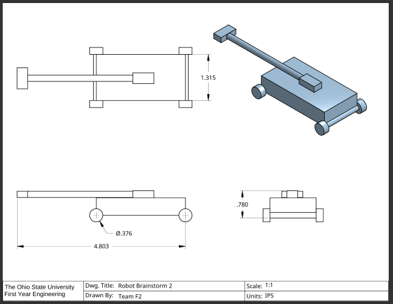
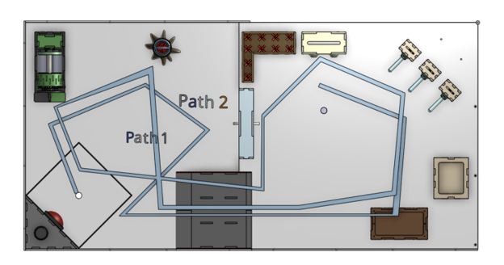
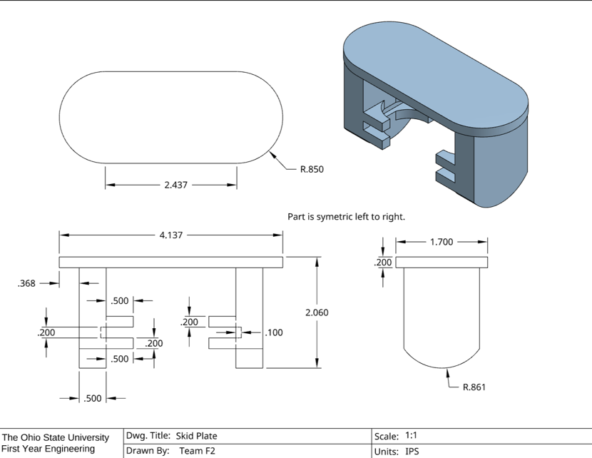
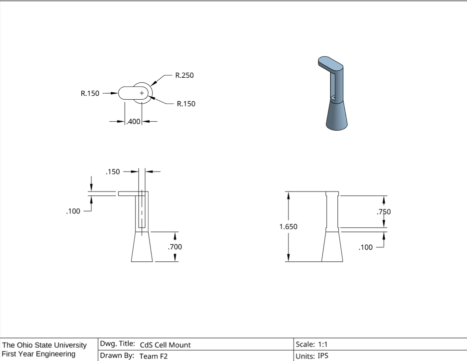
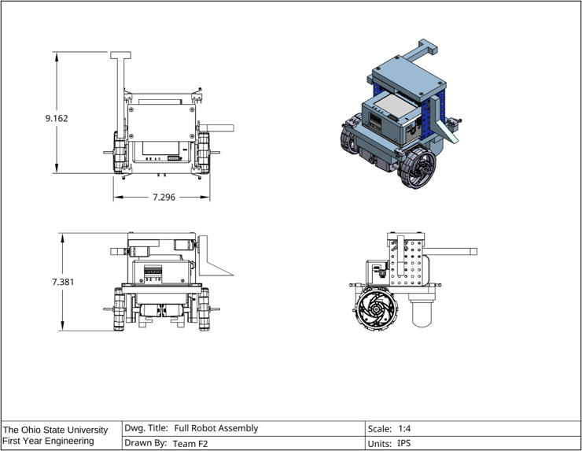
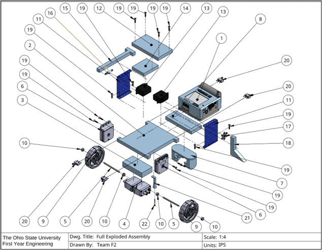

FEH Robotics
Fundamentals of Engineering Honors: Ohio State's first-year engineering course, culminating in a team-built robot for a final competition.
Overview
As part of OSU's Fundamentals of Engineering Honors Robotics program, my team and I worked within given mission parameters and objectives on simulated deadlines and budgetary restraints to build an autonomous robot. The final iteration of my team's robot included a dual-motor VEX wheel drivetrain mounted on a wooden platform, along with a metal superstructure with multiple functions outlined below.

This page will cover my team's engineering process decisions along with my specific contributions to the team and project. Above is an image of the completed CAD file of our robot, which was a task that I took great pleasure in as it involved many of my custom-fabricated parts.
Initial Design & Course Pathing Strategy
Below are some of my team's early brainstorming sketches exploring different course methodologies and design choices. We ended up deciding on using a four-wheel chassis with an actuating servo arm, which ended up evolving into a two-wheel drivetrain with a skid plate, designed by me. The design went through many other iterations and changes as a result of rigorous testing and analysis, which are all outlined below.


Custom-Fabricated Parts
Below are two drawings, both of which designed and printed by me to fit specific design needs. The skid plate was constructed to double as a mount for our optosensors as well as a third point of contact to stabilize the robot's motion. The skid plate functioned wonderfully as a third point of contact for the robot, but unfortunately the optosensors were phased out in favor of more robust systems of navigation. The CdS cell mount was created to form a cone around a sensor which had the task of reading a light's color on the ground of the course, which required very little light interference to be accurate. The CdS cell functioned with no issues other than a bit of high-centering on a ramp on the course, which was fixed with some sanding.


Full Assembly
Below are two versions of the full robot assembly created by me as part of our project documentation. The idea behind these CAD models was to allow people outside of our project to easily visualize what was going on with our robot. As is easily observable, my team made a great deal of alterations to the robot as a result of multiple hours of test runs on the course.


Demo Video
A demo run of the robot completing its course tasks.